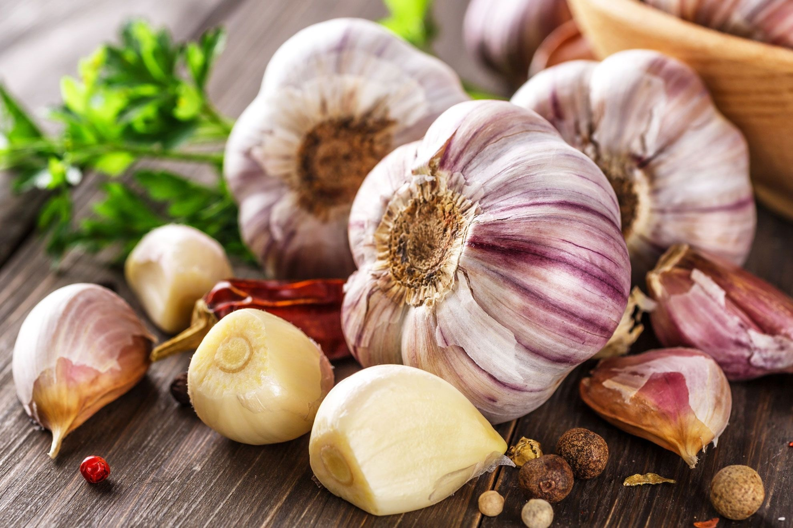

History
Due to differences in location, climate, culture or specialties, a variety of dishes with local customise have been created, and these dishes can be divided into :
| Names | |||
|---|---|---|---|
| Chuan | Xiang | Cantonese | Min |
| Su | Zhe | Hui | Lu |
Each cuisine is from different regions. Each of them has their own local ingredients, cooking methods and tastes for the local people as their preference.
Cantonese cuisine is one of the Eight Major Cuisines which from Guangdong province of China, it is also the one of the major cuisine over the world since there are more than 60% of overseas chinese are from Guangdong province.
Cantonese Cuisine more focus on the original delicate flavour, supported with 3 basic ingredients.
 Ginger
Ginger- Garlic
 Shallot
Shallot